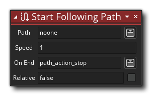

Beschreibung
Diese Aktion startet eine Instanz, die einem Pfad folgt, der in der Ressourcenstruktur erstellt wurde. Sie würden dann diese Aktion verwenden, um Ihrer Instanz mitzuteilen, welcher Pfad folgen soll, welche Geschwindigkeit dem Pfad folgen soll (gemessen in Pixeln pro Spielrahmen), wie sich zu verhalten ist, wenn das Ende des Pfads erreicht wird und ob dem absoluten oder relativen zu folgen ist Pfadposition. Wenn Sie die Geschwindigkeit einstellen, können Sie mit negativen Werten angeben, dass die Instanz dem Pfad rückwärts folgen soll. Beachten Sie, dass die hier eingestellte Geschwindigkeit durch den im Pfad-Editor für jeden Pfadpunkt festgelegten Geschwindigkeitsmodifikator geändert werden kann setze eine Pfadgeschwindigkeit auf 2 und in dem Pfad hat einer der Punkte einen Geschwindigkeitsmodifikator von 200% die tatsächliche Pixel pro Spielrahmengeschwindigkeit an diesem Punkt wird 4 sein.
Sobald Sie die anfängliche Pfadgeschwindigkeit festgelegt haben, können Sie festlegen, wie sich die Instanz verhalten soll, wenn sie das Ende des Pfades erreicht. Beachten Sie, dass wenn eine Instanz das Ende eines Pfades erreicht, dies auch einen Anderen - Pfad beendet auslöst Ereignis ):
- Stopp: Beendet den Pfad und stoppt die Instanz auf dem letzten Pfad.
- Neustart: Setzen Sie den Pfad von Anfang an fort und springen Sie erneut zur Startposition, wenn der Pfad im Pfad-Editor nicht als geschlossen markiert ist.
- Schleife: Fahren Sie von der aktuellen Position fort, um den Pfad erneut auszuführen.
- Rückwärts: Gehen Sie den Pfad erneut rückwärts (erreicht durch Umkehrung der Geschwindigkeit des Pfades), und wenn er den Anfang des Pfades erreicht, kehrt er wieder um usw.
Schließlich können Sie den Pfad als Relativ kennzeichnen oder nicht. Standardmäßig beginnt die Instanz den Pfad genau so zu verfolgen, wie Sie ihn entworfen haben, und platziert ihn im Pfad-Editor (die absolute Position). Wenn Sie jedoch das Ankreuzfeld Relativ markieren, folgt er dem Pfad von der Position, an der sich die Instanz befand erstellt (die relative Position). Das Bild unten veranschaulicht dies:
Wie Sie in diesem Bild sehen können, folgen die beiden Instanzen demselben Pfad, der mit dieser Aktion gestartet wurde, aber eine der Instanzen folgt dem absoluten Pfad, während die andere dem relativen Pfad folgt. Es sollte beachtet werden, dass, wenn "Relativ" nicht markiert ist, die Instanz zum Anfang des Pfades "springt", egal wo im Raum sie platziert ist.

Aktionssyntax:
Argumente:
Streit Beschreibung Path Die Pfadressource, der Sie folgen möchten Speed Die Geschwindigkeit (in Pixel pro Spiel), um dem Pfad zu folgen On End Die Antwort auf das Ende des Pfades
Beispiel:

Der obige Aktionsblockcode startet die aufrufende Instanz nach einem Pfad, wenn eine Taste gedrückt wird.